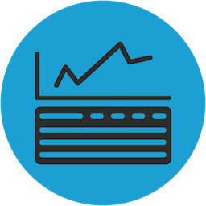

Accurate reporting is a vital tool for businesses to analyze their operations and use that information for
the decision-making process. We deliver you different reports for different departments and functions.
These reports can be automated, customised and sent anytime.

From the minute we start counting, we gather all of your data and store it in our Cloud system. Our infinite
storage cloud gathers people counting data from our sensors or any other people counting sensor you may
use, your sales and revenue data, your marketing campaigns, weather data from our databases. All these
data are analysed with machine learning methods to deliver you actionable data about your stores, campaigns,
investments, products and operation.
V-Count provides a mobile application that gives you access to people counting data. Using the mobile application
allows you to manage operations from anywhere, in real-time. All you need is your mobile phone!